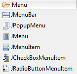
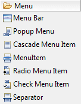
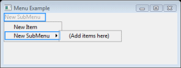
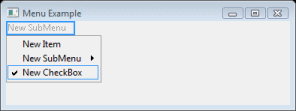
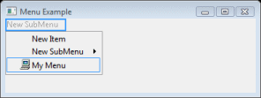
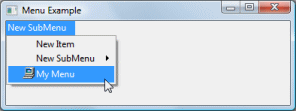
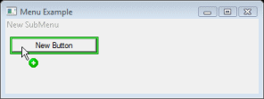
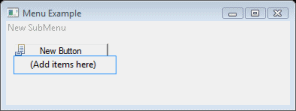
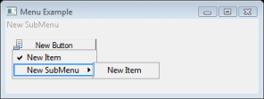

Menus are a must for just about all GUIs. Using the editor, it is quick and painless to create menu bars and popup menus.
To create a menu bar on your window, select Menu Bar (SWT) or JMenuBar (Swing) from the Palette, and then place it on your window in the Design View.
Note that these instructions only apply to window types that support menubars (e.g., SWT Shells, SWT Application Windows, and Swing JFrames). They do not apply to window types that can't have menubars (e.g., Dialogs & Wizards) or that manage their own menubars through a special framework (e.g., JFace ApplicationWindow).
To add individual menus to the menu bar, select Cascade Menu Item (SWT) or JMenu (Swing) from the Palette, and then place it on the menu bar.
To add a menu item to a menu, select the dropdown menu and add a Menu Item or JMenuItem to the dropdown menu that is displayed. If you want to make a submenu, add a Cascade Menu or JMenu to the menu.
Menu items can also be a check or radio style. To create a checkbox or radio button menu item, select Check Menu Item / JCheckBoxMenuItem or Radio Menu Item / JRadioButtonMenuItem from the Palette and add it to a menu. Under SWT, Check Menus Items and Radio Menu Items are Menu Items with their style set to CHECK or RADIO. To make a check or radio menu item initially be selected, set the selection property to true in the Property Pane for that menu item.
You
can also add an image to a menu item. Simply select the menu item, click on the
image property in the Property Pane, click on the
 button in the property editor, and select
an image.
button in the property editor, and select
an image.
Setting the text of a menu item is the same as setting the text of any other control. In the Property Pane, set the text property to the desired text. Under SWT, placing an ampersand (&) before a letter in the text property will create a mnemonic for that menu item. For Swing, you should set the mnemonic property. On most platforms, the letter after the ampersand or the character indicated by the mnemonic property will be underlined when you run the program. When you press this key when the menu is displayed, the menu item will be selected.
To quickly test what the menu will look like in your application, use the Test/Preview command. To use this feature, click on the Test/Preview button in the Toolbar above the Design View or right-click in the Design View and select Test/Preview.
In addition to creating a menu bar, you can also create a popup menu for any control, including the window. Simply select Popup Menu (SWT) or JPopupMenu (Swing) from the Palette, move it over to the desired control in the Design View and click to place it on that control. Only one popup menu can be placed on a control. After a popup menu is placed on a control, a little menu icon will appear on that control as shown below. The popup menu will also automatically open, so that you can drop menu items on it.
If you click away from the popup menu, it will disappear. If you click on the popup menu icon, the popup menu will reappear.
Adding menu items to the popup menu is identical to adding menu items to the dropdown menus on the menu bar. To see your popup menu at work, use the Test/Preview command and right-click on the control you added the popup menu to. The menu you created will now appear.